CSS3新功能总结Page2
关键词：CSS CSS3 HTML
CSS3选择器详解
1.属性选择器
在CSS3中，追加了三个属性选择器，分别为：[attr*=val]、[attr^=val]、[attr$=val]使其有通配符概念
attr表示属性名，如id,class等，val表示属性值
[attr*=val]：属性中包含val字符
[attr^=val]：属性中首字符包含val
[attr$=val]：属性中结束字符包含val
新建一个css3 1.html
运行效果如下：
2.结构性伪类选择器——伪元素选择器
结构性伪类选择器由伪类选择器、伪元素选择器和结构性伪类选择器组成，这里讲的是伪元素选择器
四个伪元素选择器：first-line、first-letter、before、after
first-line：改变指定元素中第一行样式
first-letter：改变指定元素中第一个字样式
before：在某个元素之前插入内容
after：在某个元素后面插入内容
新建一个css3 2.html
运行效果如下：
3.结构性伪类选择器——结构性伪类选择器
在CSS3中，结构性伪类选择器的特征是允许开发者根据文档的结构来指定元素的样式
PartI：四个最基本的：root、not、empty、target
root：将样式绑在页面根元素中，即页面的html部分中
not：对某元素添加样式，并使里面某个子元素不使用该样式
empty：当前元素内容为空白时使用的样式
target：该样式只当用户点击页面中超链接并跳转到target元素后起作用
新建一个css3 3.html
运行效果如下：
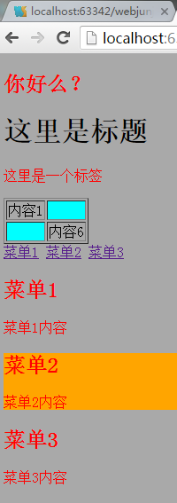PartII：first-child、last-child、nth-child、nth-last-child、nth-child(odd)、nth-child(even)、nth-last-child(odd)、nth-last-child(even)
first-child：对一个父元素的第一个子元素指定样式
last-child：对最后一个子元素指定样式
nth-child：对指定序号子元素设置样式
nth-last-child：倒序，同上
nth-child(odd)：第奇数个子元素，odd改为even表示偶数个
新建一个css-1.html
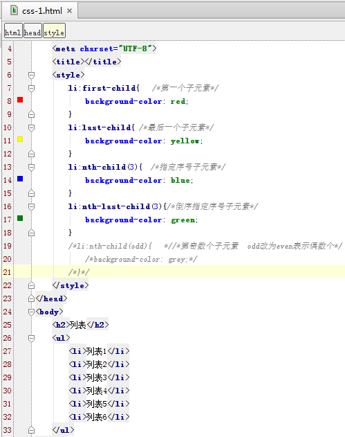运行效果如下：
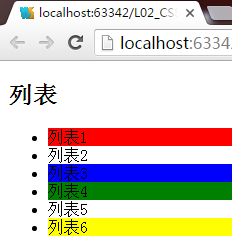PartIII：nth-of-type、nth-last-of-type
nth-of-type：计算第奇偶个子元素时，只针对同类型元素计算
nth-last-of-type：倒序，同上
新建一个css-2.html
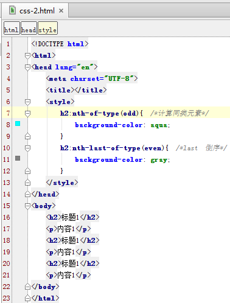运行效果如下：

PartIV：循环使用样式
nth-child(n)：
格式：n:an+b，a表示每组个数,b表示该元素在组内序号
新建一个css-3.html
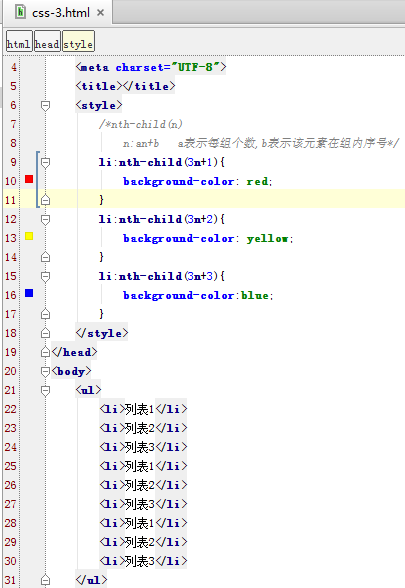运行效果如下：
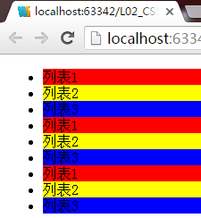PartV：only-child
only-child：给只有一个列表项的元素设置样式，此时可用only-child代替nth-child
新建一个css-4.html
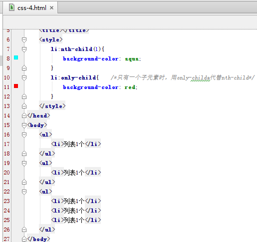运行效果如下：

4.UI元素状态伪类选择器
指定的样式只有当元素处于某种状态下时才起作用，默认状态下不起作用。此处介绍E：hover、
E：focus、E：active、E：enabled、
E：disabled、
E：checked
E：hover：鼠标经过时
E：focus：获取焦点时
E：active：鼠标按住不放时
E：checked：勾选时
E：enabled：设置可用状态的样式
E：disabled：不可用状态
新建一个css1-1.html和css1-2.html
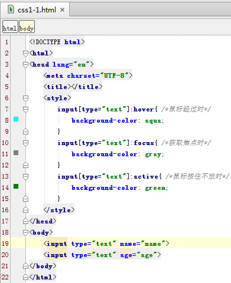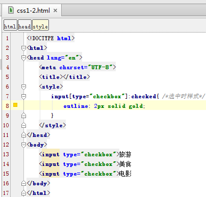
图二运行效果如下：
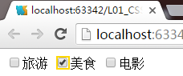新建一个css1-3.html测试enabled和disabled
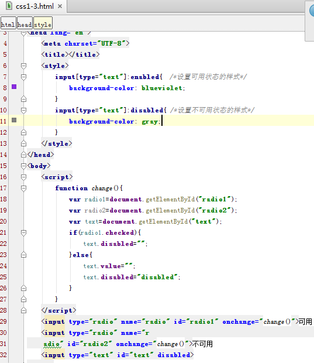运行效果如下：
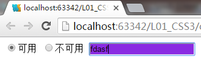5.通用兄弟元素伪类选择器
新建一个css-4.html
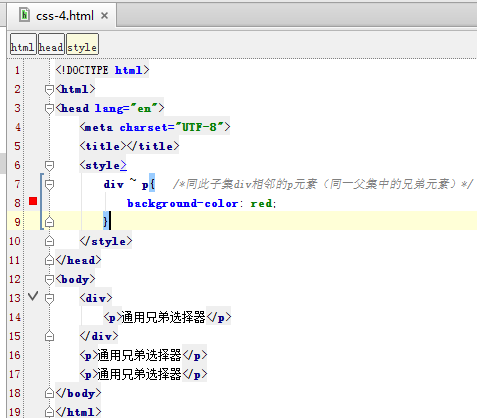运行效果如下：
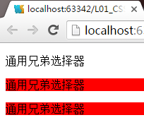